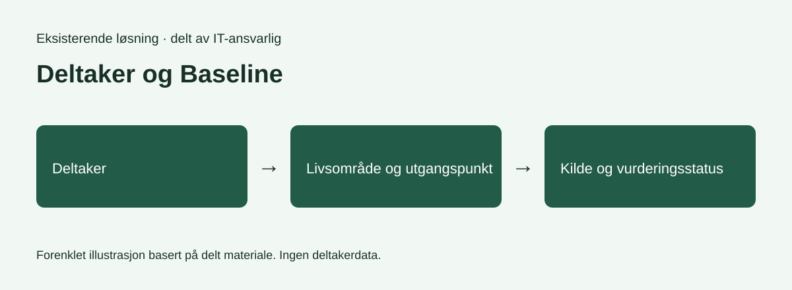
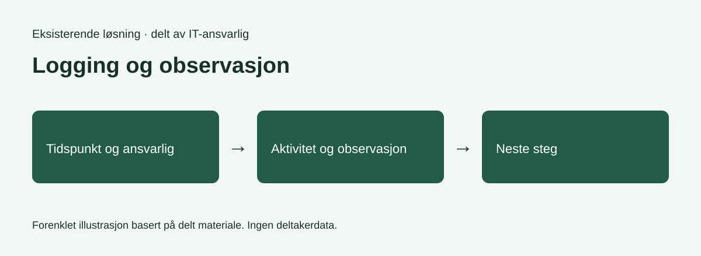
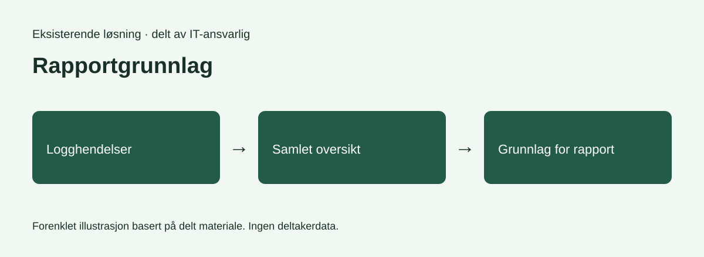
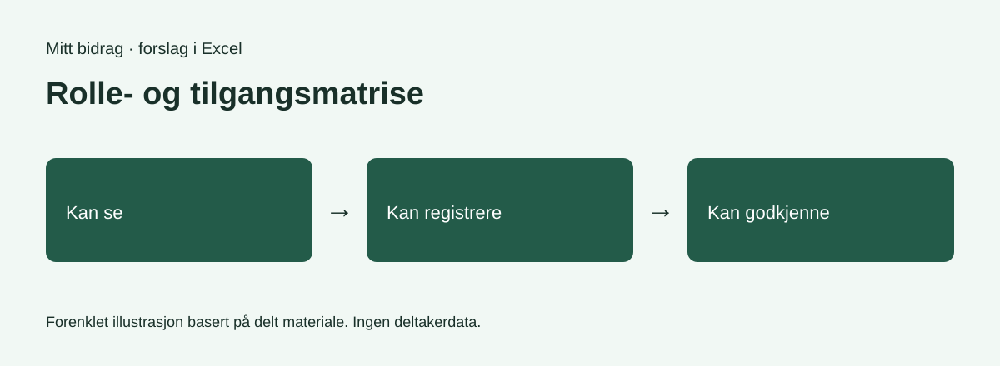

STATUS 2 · UKE 39–42 · SHAHZADI HINA GUL
Fra kartlegging til
videre utvikling.
Siden Status 1 har arbeidet gått fra observasjon av FRAMs arbeidsprosesser til konkrete systemkrav og planlegging av videre utvikling.
Arbeidet omfatter kartlegging av Microsoft 365, logger og ukeplaner. Hovedvekten ligger på Oppfølgingstavlen, tilgangsstyring og gjenbruk av informasjon.
Se arbeidsprosessen ↓ Les uke 39–42 →GRUNNLAGET FOR VIDERE ARBEID
Eksisterende løsning
Skjermbilder fra IT-ansvarlig hos FRAM viser Power Apps-løsningen under utvikling og danner grunnlag for videre kravarbeid.
Illustrasjonene under viser strukturen fra materialet i forenklet form. De tre første viser den eksisterende løsningen. Den siste viser mitt forslag til roller og tilgang.

Baseline samler vurderinger av ulike livsområder og gir et strukturert utgangspunkt for oppfølging.

Logging og observasjoner dokumenterer hendelser og gir grunnlag for videre oppfølging.

Rapportvisningen samler registrerte opplysninger. Kartleggingen min undersøker hvordan informasjon kan gjenbrukes.

Mitt forslag til rolle- og tilgangsmatrise inngår i videre planlegging. Tilgangene er ikke endelig besluttet.
MITT BIDRAG
Mitt arbeid og forslag
Mitt bidrag er kartlegging, behovsanalyse og et forslag til rolle- og tilgangsmatrise i Excel. Matrisen inngår i det videre planarbeidet.
Matrisen skiller mellom å se, registrere og godkjenne informasjon. Tilgangene er forslag som må avklares videre.
Ansvarlig og registrert av bør lagres hver for seg for å tydeliggjøre ansvar.
Arbeidet uke for uke
Les hele praksisloggen for uke 39–42 i den felles ukeplanen, sammen med ukene fra Status 1.
Åpne uke 39–42 →ERFARINGER FRA ARBEIDET
Refleksjon
Nyttig grunnlag
Konkrete logger, rapporter og skjermbilder gjorde det lettere å forstå sammenhengen mellom registrering og oppfølging.
Utfordringer
Informasjon på flere steder gjør dataflyten krevende å kartlegge. Dobbeltregistrering, ansvar og tilgang til sensitiv informasjon krever videre avklaring.
Læring
En god løsning trenger tydelig arbeidsflyt, ansvar og dataflyt. Informasjon bør kunne gjenbrukes uten at alle får tilgang til alt. Kravene må bygge på de faktiske arbeidsoppgavene.
VIDEO FRA PRAKSISEN